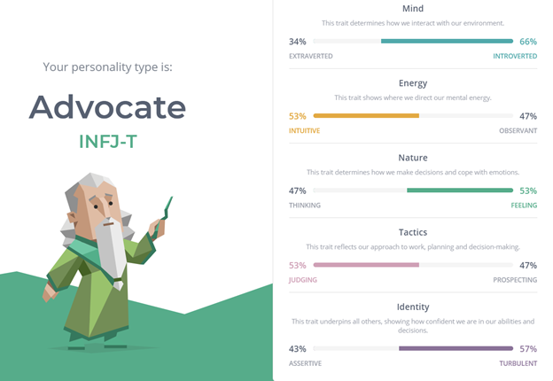
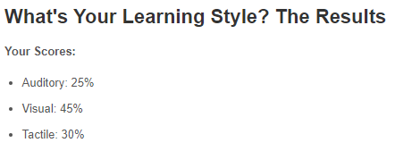
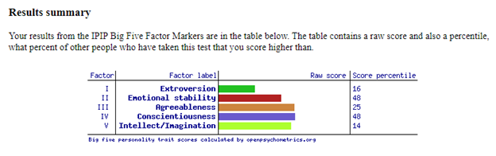

My profile
My profile

Personal information
- Name
- - Emran Radfar
- Email address
- - s3894684@student.rmit.edu.au
- Student number
- - 3894684
- Nationality
- - Iran/Australia
- Religion
- - Christian
- Languages spoken
- - English, Persian
- One interesting fact about me
- -One interesting fact about me is the fact that I hate it when I get tired and feel incredibly powerless, I exercise everyday to make sure this does not happen, and I have as much stamina as possible for any situation that might happen in life. (sounds a bit hardcore yes).
Interest in IT
- What is your interest in IT? When did your interest in IT start? Was there a particular event or person that sparked your interest? Outline your IT experience.
- I am interested in Cyber security I believe their job is very important and beneficial for society. I was always interested in Cyber security but my interest increased and increased as I saw Australia in general struggling in the Cyber security sector. With China being constantly on the news for their Cyber attacks on Australia I thought to myself that I should step up to help in any way I can. Now I have both an interest and good motivation which always keeps me going. I believe I can help Australia to strengthen their Cyber security defense and attack. This is my story, my motivation and I believe, my purpose.
- Why did you choose to come to RMIT?
- I believe RMIT is the best in teaching the IT/CS field and one of the best University’s there is in Melbourne. I was also lucky enough to receive an scholarship at this great university with it’s huge facilities.
- What do you expect to learn during your studies?
- I expect to learn many things which are beneficial regardless of the specialty any student chooses. Some examples of this so far are the fact that I am learning HTML and CSS coding in my Intro to IT units, learning Python programming in my Intro to programming unit, learning about data science in my Practical Database concepts unit and SQL programming which is also beneficial. I hope to learn more about Cyber security in the future when I choose my majors and specialize in the field.
Ideal job
- Job title
- IT security specialist
- Requirement
- Hiring managers for IT security specialist positions generally require at least an undergraduate degree (associate or bachelor) in information security, computer information systems, network security, computer science or a related field of study. IT job experience and security-centric certifications will aid candidates in securing IT security specialist positions.
Specific coursework and in-demand skill sets to look for in an IT security specialist education program include networking and network security, operating system administration, business continuity & disaster recovery, intrusion detection, hardware & software configuration, risk management and computer forensics. IT security specialists need strong communication skills, as they are responsible for educating technical and non-technical staffers on computer security protocols and raising information security awareness.
- IT Security Specialist Certifications
• (ISC)2 - Certified Information Systems Security Professional (CISSP)
• EC-Council - Certified Ethical Hacker (CEH)
• ISACA - Certified Information Systems Auditor (CISA)
• Cisco Certified Network Associate - Security (CCNA Security)
• Check Point Certified Security Administrator (CCSA)
• GIAC - Certified Intrusion Analyst (GCIA)
- IT Security Specialist Job Outlook
- Employment of IT security specialists is expected to increase by thirty-two percent from 2018 to 2028, much faster than the 5% average for all U.S. occupations. Security will remain a top concern for IT hiring managers as the frequency, scope and complexity of cyber-attacks continues to rise.
Aggressive government mandates are helping to drive demand for IT security specialists, for instance the DoD 8570 initiative, which requires Department of Defense (DoD) employees, military personnel, homeland security officers, and private contractors with access to sensitive data to get trained and certified in information security topics relevant to their access and position.
"Security is the only area of certified IT skills that has never had a negative quarter throughout this recession," says David Foote, CEO and Chief Research Officer of leading research firm, Foote Partners. "We've never had a three-month period with a loss or decline in premiums for IT security specialists."
Sources: Foote Partners IT Labor Report, U.S. Bureau of Labor Statistics' Occupational Outlook Handbook
- Seek Job: Cyber Security Specialist - CyberArk Job in Melbourne - SEEK

- Job Description
- Comprised of Design, Build, Test, Implement and Training phases, the role involves:
• Understanding the technical requirements that will feed into the design and operational documentation
• Providing information and guidance to the other technical resources and Defence from a knowledge transfer perspective
• Practical hands-on knowledge of deploying and configuring the CyberArk Privileged Access Management product in secure, classified environments
• Working with Leidos and customer stakeholders to provide input into necessary build and implementation documentation to the approved designs and requirements.
• Participating in customer and engineering workshops to finalise change, release and implementation preparations including delivery of technical artefacts to support these processes.
• Assisting with establishing testing environments as required
• Assisting with test execution and defect remediation
• Assisting with the complete set of documentation necessary for the management and delivery of Training courses, including course design information and lists of the Training Equipment and Training Materials used for delivery to the trainees.
- Qualifications
- About You and What You'll Bring
- Coupled with your education and practical experience, you will demonstrate a pro-active approach with the ability to understand the business, identify issues and develop relationships to achieve the company’s objectives. You will also have:
• Bachelor in Computer Science, Information Technology, or related discipline
• Deep understanding of the CyberArk Security platform
• CyberArk Certification and advanced CyberArk product knowledge
• Experience creating Detailed Design and other technical artefacts
• At least 3 years experience in Building and Implementing CyberArk for Government Agencies including Integration to the client environment and onboarding of the accounts
• Diligence and can work in a fast paced environment and turn things around quickly
• A team-minded attitude as well as an ability to work independently.
My take on this job
- This position not only has very good pay but it also provides a very challenging job and environment to work in which allows you to gain more experience and knowledge which are very useful. This is what makes it appealing to me.
This job requires a degree in IT or related field, with 3 years of experience in building and implementing cyber ark, Cyber ark certifications and cyber ark understanding of security. A team minded attitude as well as ability to work independently.
Right now, I am not even close in being able to match this job’s description. I have zero experience in the field and merely a beginner in almost every sector of the IT field. During the duration of my studying and after graduating and getting an entry level IT job I need to learn even more to be able to be hired for this job.
Personal profile



- What do the results of these tests mean for you?
- I think they are accurate. I am extroverted sometimes depending on my mood, but overall I am a introverted person who prefers to be alone. I do worry a lot about things as stated from my “Myers Briggs“ test where I’m the turbulent advocate. This can be an advantage if used properly if not, it will be a disadvantage and pull me down. But there are some things that are just not accurate even though I do think emotionally sometimes depending on the situation, I do usually think using my brain instead of emotions. Emotions are very situational. So overall some aspects of these tests are inaccurate. But in terms of the learning style test, it was very accurate.
- Student number
- These results DON’T influence my behaviour, but if it does influence the person building the team it would most likely involve me being in a position where I don’t interact much with the other team members (probably the absolute minimum required) and most likely be given tasks that require long hours of work to keep me busy.
- Student number
- I should remember the qualities that might put me at a disadvantage and control them (such as worrying too much). I have to remember to contribute in meetings or team discussions despite being an introvert (being selectively extroverted, which I believe I can easily do).
Overview and motivation of Project
- My project Idea is to create an app where you can track your progress on the books you are reading. For example, If I’m reading Percy Jackson: The lightning thief digitally and reading Python crash course here and there by using this app I would be able to put the name of the books that I am reading, insert the cover of the book and record the page I’m on. For example, If I finished reading Percy Jackson on page 99 today, you will write page 99 in a section called “reading progress” and next time you come back to the app you can use the app to see the page you were last on. I also have some other ideas such as inserting the total number of pages of a book so therefore you can see what percentage of the book you have read from the last page you entered in the app. The sole reason of me wanting to develop this app is the fact that I want to use an app like this. I am developing this app for myself since I don’t see any other app that is built on this idea. I was thinking of developing this idea as mobile app, possibly a website in the future but the main focus of this project is to create this online library basically. (not where you read books but track your progress on them). I have already thought of a name for this website/app. I think “MyLibrary” would be a good name for it. UX design will be very important for this project and will most likely determine if it will be successful or not. I need to spend a lot of time going through the UX design processes and making sure that I am absolutely making this website/app a joy to use not only for myself but for whoever that might use it in the future. This is especially important because the project does not particularly have a function that people can’t live without, this puts an emphasis on the usability of the website/app and makes it crucial for it to tick every principle in UX design and make the experience of users while using this website/app a great experience. If the project is successful, I’m thinking of putting a button on the website/app for donations to help develop the website/app even more or to even bring it to android and IOS. As I mentioned I am developing this website/app because I genuinely want something like this available for myself. I have not seen one app that does the little functions stated here. As a university student I find myself reading a lot of books whether for my university units or for my own interest. That is why this Idea popped into my head because I feel like this is something that is very useful. The skills required to complete this project are beneficial in the long run. Completing this project will allow me to have a decent number of skills in web development and app development, even UX design. These are all beneficial in any IT field. One of my lecturers, Sir Anthony suggested a summary function, where a user can write the pages they read and summarise them. I think It is a great idea and I will implement this in the future as well.
- Description of the features of the product
- MyLibrary will not have too many features. The features that will be present will be features that absolutely need to be present for the app to be any use, Such as the box where the user types the number of the page they have read to, the square/picture overlay of a number that shows the percentage of the book they have completed and lastly a summary page function will be made, the user can click a + icon that is labelled as summary page inside of the page they can label the page they are summarizing. This allows them to remember what they read. My great lecturer gave this gem of an advice, I see this as very useful feedback that is collected during UX design data collection, but I was lucky enough to receive it much earlier. Another feature that needs to be present is some kind of data storage, since the data of the user needs to be saved. I am unsure on how to save their data currently, but I believe I will implement either cloud data save or device data save where the data is only saved on the device. Another thing that I see as a feature of this app is it is aesthetics and minimalist design, if the app has horrible design and does not look good or feel good to use, it has been a horrible failure. This is why it is very important to go thorough the UX design processes thoroughly and make sure the usability of the application is maximized and it is the best version that it can be. This will ensure that the users share details of the application with their friends resulting in more users for the application. It also is just a great core feature to have, it makes the life’s of the users much easier. A dark mode for the application will be beneficial to also help with aesthetics. Possibly different themes for the app can be chosen in the settings section of the app. A section/button where the users can choose to donate to the developer to help with development of the app. Possibly also the ability to create custom “mini” libraries where the users can assign books to “shelfs” for example Harry Potter in the “my favourite books” category and can access those categories for their books. And one of the most important features will be a feedback section where the user can send direct feedback or bug reports to the developer. The presence of all these features will ensure that the goals of this project are met and it is successful. However, I do not want to over do the features. To achieve a minimalistic and aesthetic design there needs to be the absolute minimal but useful features present otherwise a minimalistic design is not met. Thankfully, this project doesn’t include many features, so there would be no need for eliminating features however this means a lot of focus has to be put in UX design to be successful.
- Describe the software, hardware and/or other equipment needed. Include any relevant open source tools as appropriate.
- Software’s like Android Studio are needed to develop the application. Text editors like notepad ++ or sublime text editor are also great tools to use for developing the application. Applications like Sublime text editor have amazing features such as ‘Goto anything” which is used to open files with only a few keystrokes, and instantly jump to symbols, lines or words. Multiple selections where you can select multiple lines of code or change the name of a variable by changing it only once and you can instantly switch your project. These features make sublime text editor a great tool for any developer.
- List the skills are required for your project, including software that needs to be written, and special hardware (if any). How feasible will it be to find the skills, software and hardware required?
- The skills required for the project will be fairly advanced programming skills. After all we will need to write a full fledged software. No special hardware is required other than any modern laptop, however if required I do have a PC which has a RTX 3070 GPU and Ryzen 5600XT CPU which in no doubt can run anything. I believe there are fairly good amount of resources out there to find and learn java/android programming. Afterall Java is the main language for android app development. W3SCHOOL has some great resources for pretty much anything from programming to web development, I believe they will be very useful for this project.
- If the project is successful, what will be the outcome? How will the original problem be solved? What impact will this development have?
- If this project is successful the outcome will be an amazing application where book lovers can relax and put their trust in. They won’t have to think about the page they were on or worry about forgetting what happened in the book they were reading, as this application already handles all of this for them. I believe this would be the first app that has the functions specified in the application market as I have not seen any application which serves the same functions as I have described. This will be great as it means I have found a gap in the market. I would continue to develop the application further with donations and possibly little ads on the application. This application would generate me some income as well which is great.
- References:IT security specialist info (requirement, salary, certifications, job outlook) ->: IT Security Specialist Training, Jobs, Salary, Certifications & Skills (itcareerfinder.com)
- Job info (seek) Cyber Security Specialist - CyberArk Job in Melbourne - SEEK
- Last personality test Big Five Personality Test Results (openpsychometrics.org)